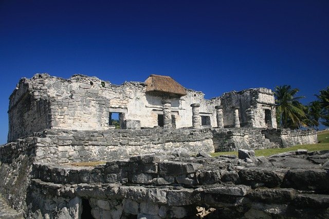
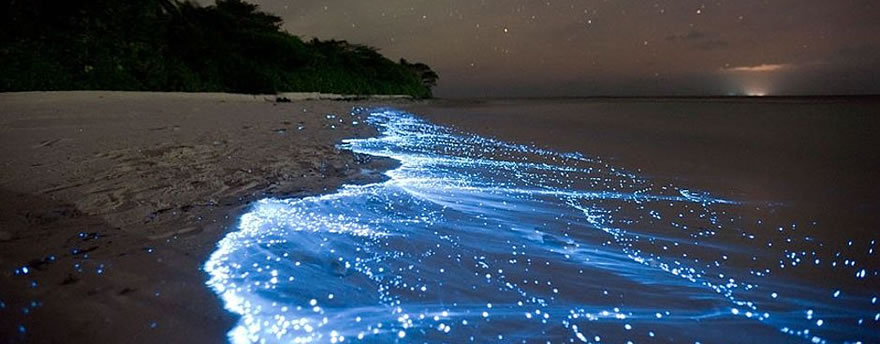

Tours
San Gervasio
Hop on a scooter and ride out to San Gervasio, a Mayan archaeological site on the northern part of the island. Ruins date back to 100 B.C. These ruins were once a place of pilgrimage for Mayan women to worship the goddess Ix Chel; a goddess of fertility, childbirth and medicine. Entrance to the park is covered in the price of the tour, as well as a bilingual tour guide.
Isla de Passion
 Take a Jeep and drive the streets of Cozumel until you reach the Protected Natural Area. Feel the adrenaline of riding an off-road journey into the dwarf jungle. Once you arrive to Bahia Ciega, a small boat will pick you up and take you to the other side of the lagoon, were Isla Pasión and one of the best beaches in Cozumel will be waiting for you. Once on the island, you will be able to enjoy our bar and buffet, lay back in a hammock to enjoy the view or participate in our visitors’ activities. This tour includes: bilingual guide, buffet, open bar and amenities (the driver can only drink alcohol-free beverages).
Take a Jeep and drive the streets of Cozumel until you reach the Protected Natural Area. Feel the adrenaline of riding an off-road journey into the dwarf jungle. Once you arrive to Bahia Ciega, a small boat will pick you up and take you to the other side of the lagoon, were Isla Pasión and one of the best beaches in Cozumel will be waiting for you. Once on the island, you will be able to enjoy our bar and buffet, lay back in a hammock to enjoy the view or participate in our visitors’ activities. This tour includes: bilingual guide, buffet, open bar and amenities (the driver can only drink alcohol-free beverages).
Jungle Tours from Playa del Carmen
 Chose from our selection of off-road vehicles and head into the Jungle in search of adventure. A local guide will orient you to a beautiful waterfall where sack lunch will be provided. Lush foliage and an array of wildlife await on this amazing jeep tour.
Chose from our selection of off-road vehicles and head into the Jungle in search of adventure. A local guide will orient you to a beautiful waterfall where sack lunch will be provided. Lush foliage and an array of wildlife await on this amazing jeep tour.
Holbox Nighttime Tour
Cozumel boasts more than a dozen public beaches. Whether you want to surf, snorkel, swim or sunbathe; your options are not limited. There are several beaches within walking distance from the cruise port. Along the south-western coastline is Palancar Beach offering free ammenities to the public. Punta Sur Beach is the southern tip of Cozumel and boasts the largest ecological park with many reefs and lagoons; perfect for the avid snorkler. Along the eastern coast surf enthusiasts can rent equiptment at several beaches including Chen Rio Beach and Ixpalbarco Beach. There are several private beaches offering a little more privacy with admission along the eastern coast. For those seeking more adventure and activity there are many clubs also along the eastern coast offering water activities for a daily admission.
Call us to schedule a tour today!